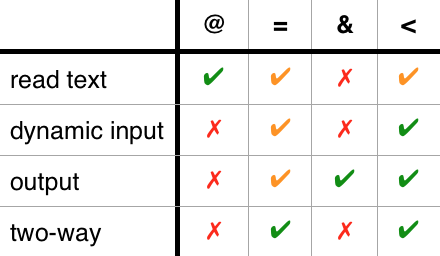

The premise
In AngularJS, when we define a component (or a directive), we can create inner scope variables from attributes. The API for doing so is rather convoluted:
bindings: {
attr1: '@',
attr2: '<',
attr3: '=',
attr4: '&'
}I got tired of paying the price of wrapping my brain around it every time I used, so in this post we will dissect the difference between the four symbols once and for all.
Specifically, we'll...
- learn how to pass strings (
@) - learn how to pass dynamic expressions (
<) - learn how to catch output (
&) - learn how to set up two-way data bindings (
=) - learn how to do all of the above without using any of the four
- learn why
<kicks the ass of the other three
Reading an attribute as text
Let's start with @, the most straightforward of the four as it simply reads the attribute as text. In other words we pass a string to the component.
Say we have this component:
app.component("readingstring", {
bindings: { text: '@' },
template: '<p>text: <strong>{{$ctrl.text}}</strong></p>'
});And we render it like this:
<readingstring text="hello"></readingstring>Then here is what we get:
Using @ creates an inner variable populated with the string content of the named attribute. You could say it serves as an initial config of the component.
Evaluating an attribute as an expression
More interesting is the need to evaluate an attribute as an expression, and have it reevaluated whenever the expression changes. Dynamic input!
We want to be able to do this...
<dynamicinput in="outervariable"></dynamicinput>...and pass the evaluation of outervariable into dynamicinput.
Prior to AngularJS 1.5, the only syntax we had for this was =:
app.component("dynamicinput",{
bindings: { in: '=' },
template: '<p>dynamic input: <strong>{{$ctrl.in}}</strong></p>'
});The downside of = was that it created a two-way data binding, even though we only needed a one-way. This also meant that the expression we pass in must be a variable.
But with AngularJS 1.5 we got <, which means one-way data binding. This allows us to use any expression as input, such as a function call:
<dynamicinput in="calculateSomething()"></dynamicinput>The component implementation would be exactly the same, except changing = for <.
Catching output
Time to turn things around - how do we catch output from a component? See the tiny app below - the buttons are rendered in a child, and when they are clicked we want to update the outer value accordingly.
This is where & comes in. It interprets the attribute as a statement and wraps it in a function. The component can then call that function at will, and populate variables in the statement. Output to the parent!
If our outer html looks like this...
Outer value: {{count}}
<output out="count = count + amount"></output>..then an implementation of output using & could look like this:
app.component("output",{
bindings: { out: '&' },
template: `
<button ng-click="$ctrl.out({amount: 1})">buy one</button>
<button ng-click="$ctrl.out({amount: 5})">buy many</button> `
});Note how we pass in an object with the variables to populate. This convoluted syntax means that in order to use a component with an output we must know two things:
- the attribute name(s) to use
- the names of the variables that will magically be created.
Because & is so convoluted, many use = to do output. By passing in the variable to be manipulated...
Outer value: {{count}}
<output out="count"></output>...we then simply change that variable inside the component:
app.component("output",{
bindings: { out: '=' },
template: `<div>
<button ng-click="$ctrl.out = $ctrl.out + 1;">buy one</button>
<button ng-click="$ctrl.out = $ctrl.out + 5;">buy many</button>
</div>`
});This really isn't very pretty though:
- we're again doing two-way data binding even though we only need one way
- we might not want to save the output, but simply act on it
A nicer solution than all of the above is to use < to create output by passing in a callback!
We create the callback in the outer controller...
$scope.callback = function(amount){
$scope.count += amount;
}...and pass it to the component:
<output out="callback"></output>The component now simply calls it accordingly:
app.component("output",{
bindings: { out: '<' },
template: `
<button ng-click="$ctrl.out(1)">buy one</button>
<button ng-click="$ctrl.out(5)">buy many</button>`
});Very similar to &, but without the convoluted magic!
As an interesting aside, this pattern is exactly how output from a component works in React.
Two-way data binding
This is where = is usually allowed to shine as an AngularJS poster boy. Take this app:
If we render it like this...
Outer: <input ng-model="value">
<twoway connection="value"></twoway>...then we can implement twoway using = like this:
app.component("twowayeq",{
bindings: { connection: '=' },
template: `inner: <input ng-model="$ctrl.connection">`
});Admittedly easy, but note - it is rather rare to need two-way data binding. Often what you actually want is an input and an output.
Which brings us to how we can implement two-way binding using only <! If we again create a callback function in the outer controller...
$scope.callback = function(newval){
$scope.value = newval;
}...and pass in both the value and the callback...
<twoway value="value" callback="callback"></twoway>...then the component can be created thusly:
app.component("twowayin",{
bindings: {
value: '<',
callback: '<'
},
template: `
<input ng-model="$ctrl.value" ng-change="$ctrl.callback($ctrl.value)">
`
});We have achieved two-way data binding, but we're still adhering to a uni-directional data flow. Better karma!
Leaving the symbols behind alltogether
Fact is, the four symbols are just shortcuts. We can do all that they do without them.
The string passing app...
...that we rendered like this...
<readingstring text="hello"></readingstring>...could be implemented by accessing the $element service:
app.component("readingstring", {
controller: function($element){
this.text = $element.attr("text");
},
template: '<p>text: <strong>{{$ctrl.text}}</strong></p>'
});Or with a directive, by using the attrs that are passed to link:
app.directive("readingstring", function(){
return {
restrict: 'E',
scope: {},
link: function(scope,elem,attrs){
scope.text = attrs.text;
},
template: '<p>text: <strong>{{text}}</strong></p>'
};
});The dynamic input app...
...rendered like this...
<dynamicinput in="outervariable"></dynamicinput>...could be implemented by using a .$watch call in the parent scope:
app.component("dynamicinput",{
controller: ($scope,$element) => {
let expression = $element.attr("in");
$scope.$parent.$watch(expression, newVal => $scope.in = newVal);
},
template: '<p>dynamic input: <strong>{{in}}</strong></p>'
});The output app...
...rendered like this...
<output out="count = count + amount"></output>...could be implemented by calling $scope.$apply in the parent scope:
app.component("output",{
controller: ($scope,$element,$timeout) => {
let statement = $element.attr("out");
$scope.increaseBy = by => {
$timeout(function(){
$scope.$parent.$apply(`amount = ${by}; ${statement}`);
});
}
},
template: `
<button ng-click="increaseBy(1)">buy one</button>
<button ng-click="increaseBy(5)">buy many</button>`
});This isn't exactly the same thing as & since we have now also polluted the parent scope with an amount variable, but still, it shows the concept well enough.
Finally the two-way app...
...rendered like with =...
<twoway connection="value"></twoway>...could be implemented by setting a $watch in both parent and child scope:
app.component("twoway",{
controller: ($scope,$element,$timeout) => {
let variable = $element.attr("connection");
$scope.$parent.$watch(variable, newVal => $scope.inner = newVal;
$scope.$watch('inner', (newVal='') => $timeout( () => {
$scope.$parent.$apply(`${variable} = "${newVal}";`);
}));
},
template: `inner: <input ng-model="inner">`
});This is slight cheating since we're now assuming the bound value to always be a string, but, the gist is still there!
Wrapping up
We hope this journey has been educational, and that @, <, = and & now feel less intimidating.
And that you noticed how < kicks the ass of the rest! It can do everything, which also = can, but < looks much better doing it.

Both are somewhat clumsy for reading strings (< requires a string in a string, and = needs a proxy variable), but that's easy enough to do vanilla so @ shouldn't get too cocky.
Also, & can go rotate on a stick.